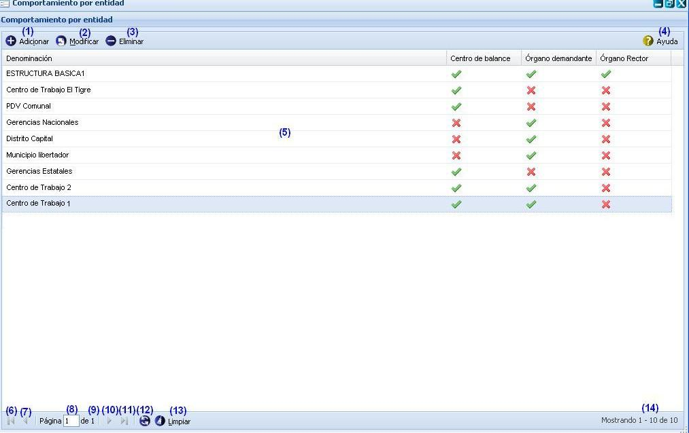
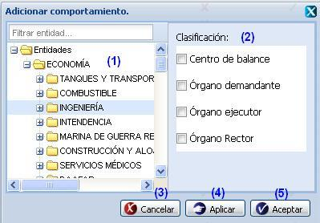
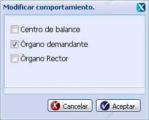
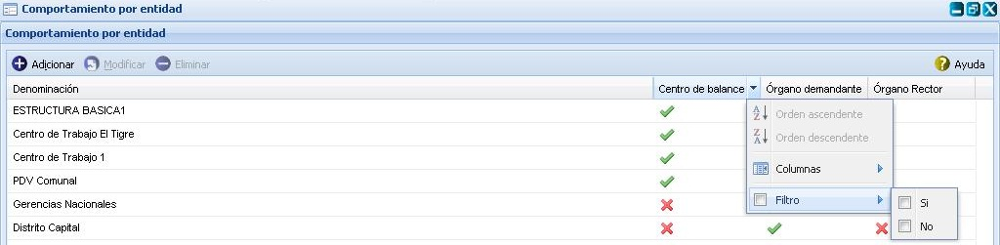

-- Comportamiento por entidad--
En esta funcionalidad se gestionan los diferentes comportamientos que puede poseer una Entidad, los cuales pueden ser: Centro de balance, Órgano demandante, Órgano ejecutor y Órgano rector, a la misma solo tienen permiso aquellos usuarios que presenten categoría rector. Para acceder a esta funcionalidad se selecciona Inicio/Planificación material/Configuraciones/Comportamiento por entidad.
Una vez seleccionada la funcionalidad, aparecerá en pantalla la interfaz de la misma, ver figura 1.

Figura 1. Interfaz y acciones de la funcionalidad Comportamiento por entidad.
Las diferentes opciones que conforman la figura anterior permiten:
-
Adicionar comportamiento por entidad, ver Adicionar comportamiento, esta acción permite adicionar un comportamiento a una entidad, para ejecutarla el sistema le mostrará la interfaz “Adicionar comportamiento”, cuando se presione el botón Aceptar o Aplicar de dicha interfaz el sistema mostrará un mensaje de información notificando que se adicionó el comportamiento por entidad satisfactoriamente. Se puede acceder a esta funcionalidad con las teclas (Alt + I).
-
Modificar comportamiento por entidad, ver Modificar comportamiento , esta acción permite modificar el comportamiento de una entidad. Se puede acceder a esta funcionalidad seleccionando el comportamiento por entidad y oprimiendo las teclas (Alt + M).
-
Eliminar un comportamiento por entidad previamente seleccionado en el listado. Esta acción permite eliminar el(los) comportamiento(s) deseado(s), una vez seleccionado(s) se procede a seleccionar la opción Eliminar de la interfaz, automáticamente se mostrará un mensaje de confirmación, que se puede Aceptar o Cancelar según sea el caso, de presionar la opción Aceptar el sistema le mostrará un mensaje de información sobre el éxito de la operación realizada, quedando eliminado el(los) comportamiento(s) seleccionado(s), si cancela el mensaje de confirmación, el sistema permanece en la interfaz principal y no elimina el(los) comportamiento(s). Se puede realizar esta operación seleccionando un comportamiento por entidad en el listado y oprimiendo la tecla (Delete).
-
Mostrar ayuda de la funcionalidad. Se puede realizar esta operación seleccionando la combinación de teclas (Alt + H).
-
Lista de entidades con su(s) comportamiento(s).
- Ir a la primera página, mostrando las primeras entidades.
- Ir a la página anterior.
- Muestra el número de la página donde se encuentra, se puede introducir el número.
- Muestra el número máximo de páginas.
- Ir a la siguiente página.
- Ir a la última página.
- Actualizar el listado de entidades con su(s) comportamiento(s).
- Limpiar filtro(s). Esta acción limpiará todos los criterios de búsqueda, deshabilitando los filtros realizados. Se puede realizar esta operación seleccionando la combinación de teclas (Alt + L).
- Mostrar la cantidad de resultados encontrados.
Adicionar comportamiento
Para ejecutar esta opción, se procede a seleccionar el botón Adicionar que aparece en la interfaz principal, ver figura 1. Inmediatamente aparecerá una ventana donde se le podrán adicionar a una entidad uno o varios comportamiento, ver figura 2.

Figura 2. Interfaz Adicionar comportamiento.
La interfaz se encuentra dividida en dos paneles (izquierdo y derecho), en el panel izquierdo se muestra una estructura arbórea de las Entidades y en panel derecho los cuatro comportamientos que se le podrán adicionar a una entidad.
Las diferentes opciones que conforma la figura anterior permiten:
-
Desplegar el árbol hasta localizar la entidad a la que le va a asignar algún tipo de comportamiento. Es importante mencionar que para acceder más rápido a la búsqueda de la entidad, puede escribir el nombre o parte del mismo en el campo que se encuentra encima de la estructura de Entidades y presionar la tecla Enter, rápidamenteel sistema le realizará una búsqueda en la estructura de Entidades relacionadas con lo que escribió en el campo.
-
Seleccionar el(los) tipo(s) de comportamiento(s) que le asignará a la entidad seleccionada en la opción anterior.
-
Cancelar las acciones y salir de la interfaz sin guardar los datos.
-
Guardar los datos y limpiar las selecciones de la interfaz, permitiendo adicionar otro comportamiento a la entidad.
-
Adicionar los comportamientos al listado y cerrar la interfaz.
Validación de los campos:
- Si la entidad seleccionada ya posee comportamiento no será posible adicionarle otros comportamientos, cuestión que el sistema tendrá en cuenta y le enviará un mensaje de error.
Modificar comportamiento
Para modificar un Comportamiento debe seleccionar la entidad deseada y se opta por la opción Modificar de la interfaz, ver figura 1. Inmediatamente aparecerá una ventana donde podrá modificar el comportamiento de la entidad seleccionada, ver figura 3.

Figura 3. Interfaz Modificar comportamiento.
Seguidamente se modifica el comportamiento de la entidad seleccionada y se presiona uno de los siguientes botones:
-
Si presiona el botón Aceptar: Se muestra un mensaje de confirmación de la operación, confirme la operación, se cierra la ventana, se muestra un mensaje de información sobre el éxito de la operación realizada, se acepta el mensaje y queda actualizado el listado existente en la interfaz principal. Si cancela el mensaje de confirmación permanece en la misma interfaz.
-
Si presiona el botón Cancelar: Se cierra la ventana para modificar comportamientos sin tener en cuenta la posibilidad de haber marcado algún comportamiento.
Buscar comportamiento
Esta funcionalidad permite efectuar una búsqueda mediante filtrado en las columnas. Para efectuar la misma debe estar en la interfaz principal, ver figura 1, una vez que accedió a esta se presiona clic en el botón “ ” que aparece en la parte derecha de cada columna. Luego de presionado el mismo, se procede a desplegar la columna y se ofrece la posibilidad de realizar búsqueda mediante filtrado. Se introduce o selecciona el criterio de filtrado según la información que brinde la columna seleccionada. Inmediatamente se presiona la tecla Enter y el sistema le mostrará en la interfaz los comportamientos según el criterio de filtrado seleccionado. En caso de que no existan comportamientos a mostrar para el criterio de filtrado seleccionado el sistema lo notificará mostrando el mensaje de información: “No existen datos que se correspondan con el criterio de búsqueda especificados.”.
” que aparece en la parte derecha de cada columna. Luego de presionado el mismo, se procede a desplegar la columna y se ofrece la posibilidad de realizar búsqueda mediante filtrado. Se introduce o selecciona el criterio de filtrado según la información que brinde la columna seleccionada. Inmediatamente se presiona la tecla Enter y el sistema le mostrará en la interfaz los comportamientos según el criterio de filtrado seleccionado. En caso de que no existan comportamientos a mostrar para el criterio de filtrado seleccionado el sistema lo notificará mostrando el mensaje de información: “No existen datos que se correspondan con el criterio de búsqueda especificados.”.

Figura 4. Búsqueda por filtrado de columnas de la interfaz.